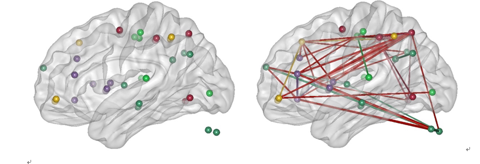

<!DOCTYPE html>
<html lang="zh">
<head><meta name="generator" content="Hexo 3.8.0">
    <meta charset="utf-8">
    
    <title>fMRI中常用的工具包 | FEI&#39;s Blog</title>
    
    
        <meta name="keywords" content="fMRI,toolboxhexo">
    
    <meta name="viewport" content="width=device-width, initial-scale=1, maximum-scale=1">
    <meta name="description" content="fMRI分析的各个阶段用到的工具包和画图工具。">
<meta name="keywords" content="fMRI,toolboxhexo">
<meta property="og:type" content="article">
<meta property="og:title" content="fMRI中常用的工具包">
<meta property="og:url" content="http://ff120.github.io/hexoblog/2017/05/02/技术/认知神经科学/fMRI中常用的工具包/index.html">
<meta property="og:site_name" content="FEI&#39;s Blog">
<meta property="og:description" content="fMRI分析的各个阶段用到的工具包和画图工具。">
<meta property="og:locale" content="zh-Hans">
<meta property="og:image" content="http://ff120.github.io/hexoblog/2017/05/02/技术/认知神经科学/fMRI中常用的工具包/2017-05-02_120405.png">
<meta property="og:image" content="http://ff120.github.io/hexoblog/2017/05/02/技术/认知神经科学/fMRI中常用的工具包/2017-05-02_111209.png">
<meta property="og:image" content="http://ff120.github.io/hexoblog/2017/05/02/技术/认知神经科学/fMRI中常用的工具包/2017-05-02_125514.png">
<meta property="og:image" content="http://ff120.github.io/hexoblog/2017/05/02/技术/认知神经科学/fMRI中常用的工具包/2017-05-02_130248.png">
<meta property="og:image" content="http://ff120.github.io/hexoblog/2017/05/02/技术/认知神经科学/fMRI中常用的工具包/2017-05-02_130835.png">
<meta property="og:image" content="http://ff120.github.io/hexoblog/2017/05/02/技术/认知神经科学/fMRI中常用的工具包/1.png">
<meta property="og:image" content="http://ff120.github.io/hexoblog/2017/05/02/技术/认知神经科学/fMRI中常用的工具包/2.png">
<meta property="og:image" content="http://ff120.github.io/hexoblog/2017/05/02/技术/认知神经科学/fMRI中常用的工具包/QQ截图20170502132207.png">
<meta property="og:image" content="http://ff120.github.io/hexoblog/2017/05/02/技术/认知神经科学/fMRI中常用的工具包/5.png">
<meta property="og:image" content="http://ff120.github.io/hexoblog/2017/05/02/技术/认知神经科学/fMRI中常用的工具包/lh_aparc.jpeg">
<meta property="og:image" content="http://ff120.github.io/hexoblog/2017/05/02/技术/认知神经科学/fMRI中常用的工具包/encode.png">
<meta property="og:image" content="http://ff120.github.io/hexoblog/2017/05/02/技术/认知神经科学/fMRI中常用的工具包/8.png">
<meta property="og:image" content="http://ff120.github.io/hexoblog/2017/05/02/技术/认知神经科学/fMRI中常用的工具包/caret.png">
<meta property="og:image" content="http://ff120.github.io/hexoblog/2017/05/02/技术/认知神经科学/fMRI中常用的工具包/QQ截图20170502133729.png">
<meta property="og:image" content="http://ff120.github.io/hexoblog/2017/05/02/技术/认知神经科学/fMRI中常用的工具包/QQ截图20170514155026.png">
<meta property="og:updated_time" content="2019-03-28T00:54:59.457Z">
<meta name="twitter:card" content="summary">
<meta name="twitter:title" content="fMRI中常用的工具包">
<meta name="twitter:description" content="fMRI分析的各个阶段用到的工具包和画图工具。">
<meta name="twitter:image" content="http://ff120.github.io/hexoblog/2017/05/02/技术/认知神经科学/fMRI中常用的工具包/2017-05-02_120405.png">
    

    
        <link rel="alternate" href="/atom.xml" title="FEI&#39;s Blog" type="application/atom+xml">
    

    
        <link rel="icon" href="/hexoblog/favicon.ico">
    

    <link rel="stylesheet" href="/hexoblog/libs/font-awesome/css/font-awesome.min.css">
    <link rel="stylesheet" href="/hexoblog/libs/open-sans/styles.css">
    <link rel="stylesheet" href="/hexoblog/libs/source-code-pro/styles.css">

    <link rel="stylesheet" href="/hexoblog/css/style.css">
    <script src="/hexoblog/libs/jquery/2.1.3/jquery.min.js"></script>
    <script src="/hexoblog/libs/jquery/plugins/cookie/1.4.1/jquery.cookie.js"></script>
    
    
        <link rel="stylesheet" href="/hexoblog/libs/lightgallery/css/lightgallery.min.css">
    
    
        <link rel="stylesheet" href="/hexoblog/libs/justified-gallery/justifiedGallery.min.css">
    
    
    
    


    
        <script async src="//busuanzi.ibruce.info/busuanzi/2.3/busuanzi.pure.mini.js"></script>
    
</head>
</html>
<body>
    <div id="container">
        <header id="header">
    <div id="header-main" class="header-inner">
        <div class="outer">
            <a href="/hexoblog/" id="logo">
                <i class="logo"></i>
                <span class="site-title">FEI&#39;s Blog</span>
            </a>
            <nav id="main-nav">
                
                    <a class="main-nav-link" href="/hexoblog/">首页</a>
                
                    <a class="main-nav-link" href="/hexoblog/archives">归档</a>
                
                    <a class="main-nav-link" href="/hexoblog/categories">分类</a>
                
                    <a class="main-nav-link" href="/hexoblog/tags">标签</a>
                
                    <a class="main-nav-link" href="/hexoblog/about">关于</a>
                
            </nav>
            
            <div id="search-form-wrap">

    <form class="search-form">
        <input type="text" class="ins-search-input search-form-input" placeholder="Rechercher">
        <button type="submit" class="search-form-submit"></button>
    </form>
    <div class="ins-search">
    <div class="ins-search-mask"></div>
    <div class="ins-search-container">
        <div class="ins-input-wrapper">
            <input type="text" class="ins-search-input" placeholder="Type something...">
            <span class="ins-close ins-selectable"><i class="fa fa-times-circle"></i></span>
        </div>
        <div class="ins-section-wrapper">
            <div class="ins-section-container"></div>
        </div>
    </div>
</div>
<script>
(function (window) {
    var INSIGHT_CONFIG = {
        TRANSLATION: {
            POSTS: 'Articles',
            PAGES: 'Pages',
            CATEGORIES: 'Catégories',
            TAGS: 'Tags',
            UNTITLED: '(Untitled)',
        },
        ROOT_URL: '/hexoblog/',
        CONTENT_URL: '/hexoblog/content.json',
    };
    window.INSIGHT_CONFIG = INSIGHT_CONFIG;
})(window);
</script>
<script src="/hexoblog/js/insight.js"></script>

</div>
        </div>
    </div>
    <div id="main-nav-mobile" class="header-sub header-inner">
        <table class="menu outer">
            <tr>
                
                    <td><a class="main-nav-link" href="/hexoblog/">首页</a></td>
                
                    <td><a class="main-nav-link" href="/hexoblog/archives">归档</a></td>
                
                    <td><a class="main-nav-link" href="/hexoblog/categories">分类</a></td>
                
                    <td><a class="main-nav-link" href="/hexoblog/tags">标签</a></td>
                
                    <td><a class="main-nav-link" href="/hexoblog/about">关于</a></td>
                
                <td>
                    
    <div class="search-form">
        <input type="text" class="ins-search-input search-form-input" placeholder="Rechercher">
    </div>

                </td>
            </tr>
        </table>
    </div>
</header>

        <div class="outer">
            
            
                <aside id="sidebar">
   
        
    <div class="widget-wrap" id="categories">
        <h3 class="widget-title">
            <span>Catégories</span>
            &nbsp;
            <a id="allExpand" href="#">
                <i class="fa fa-angle-double-down fa-2x"></i>
            </a>
        </h3>
        
        
        
         <ul class="unstyled" id="tree"> 
                    <li class="directory">
                        <a href="#" data-role="directory">
                            <i class="fa fa-folder"></i>
                            &nbsp;
                            心理学
                        </a>
                         <ul class="unstyled" id="tree"> 
                    <li class="directory">
                        <a href="#" data-role="directory">
                            <i class="fa fa-folder"></i>
                            &nbsp;
                            记忆魔法
                        </a>
                         <ul class="unstyled" id="tree">  <li class="file"><a href="/hexoblog/2019/04/03/心理学/记忆魔法/代码记忆法/">代码记忆法</a></li>  </ul> 
                    </li> 
                     </ul> 
                    </li> 
                    
                    <li class="directory open">
                        <a href="#" data-role="directory">
                            <i class="fa fa-folder-open"></i>
                            &nbsp;
                            技术
                        </a>
                         <ul class="unstyled" id="tree"> 
                    <li class="directory">
                        <a href="#" data-role="directory">
                            <i class="fa fa-folder"></i>
                            &nbsp;
                            Web开发
                        </a>
                         <ul class="unstyled" id="tree">  <li class="file"><a href="/hexoblog/2016/06/11/技术/Web开发/后台开发_How-to-install-Laravel-framework/">How to install Laravel framework</a></li>  <li class="file"><a href="/hexoblog/2016/06/11/技术/Web开发/后台开发_laravel-4-note-01/">laravel 4 note 01</a></li>  <li class="file"><a href="/hexoblog/2016/06/11/技术/Web开发/后台开发_Make-phpStorm-friendly-to-laravel/">Make phpStorm friendly to laravel</a></li>  <li class="file"><a href="/hexoblog/2016/06/11/技术/Web开发/后台开发_sublime-Text-tricks/">sublime Text tricks</a></li>  <li class="file"><a href="/hexoblog/2016/06/11/技术/Web开发/后台开发_think-php-note-01/">think php note 01</a></li>  <li class="file"><a href="/hexoblog/2016/06/11/技术/Web开发/后台开发_think-php-note-02/">think php note 02</a></li>  <li class="file"><a href="/hexoblog/2016/06/11/技术/Web开发/后台开发_think-php-note-03/">think php note 03</a></li>  <li class="file"><a href="/hexoblog/2016/06/11/技术/Web开发/后台开发_PHP编译less文件-lessphp的使用/">PHP编译less文件-lessphp的使用</a></li>  <li class="file"><a href="/hexoblog/2016/06/11/技术/Web开发/后台开发_Lavarel-后台组件frozenode的使用/">Lavarel 后台组件frozenode的使用</a></li>  <li class="file"><a href="/hexoblog/2016/06/11/技术/Web开发/后台开发_Linux常用命令/">Linux常用命令</a></li>  <li class="file"><a href="/hexoblog/2016/06/11/技术/Web开发/后台开发_Linux主机之间同步文件/">Linux主机之间同步文件</a></li>  <li class="file"><a href="/hexoblog/2016/06/11/技术/Web开发/后台开发_PHP基本操作/">PHP基本操作</a></li>  <li class="file"><a href="/hexoblog/2016/06/11/技术/Web开发/后台开发_短信验证码的实现/">短信验证码的实现</a></li>  <li class="file"><a href="/hexoblog/2016/06/11/技术/Web开发/后台开发_配置Apache支持使用HTTPS/">配置Apache支持使用HTTPS</a></li>  <li class="file"><a href="/hexoblog/2016/06/11/技术/Web开发/测试_使用Selenium测试UI/">测试_使用Selenium测试UI</a></li>  <li class="file"><a href="/hexoblog/2016/06/11/技术/Web开发/后台开发_PhpStorm常用快捷键/">PhpStorm常用快捷键</a></li>  <li class="file"><a href="/hexoblog/2016/06/11/技术/Web开发/微信开发_微信发送消息PHP-SDK/">微信发送消息PHP SDK</a></li>  <li class="file"><a href="/hexoblog/2016/06/11/技术/Web开发/微信开发_获取地理位置/">微信获取地理位置 </a></li>  <li class="file"><a href="/hexoblog/2016/06/11/技术/Web开发/微信开发_发送模板消息的代码/">微信发送模板消息的代码</a></li>  <li class="file"><a href="/hexoblog/2016/06/11/技术/Web开发/测试_Selenium-定位元素的几种方式/">测试_Selenium定位元素的几种方式</a></li>  <li class="file"><a href="/hexoblog/2016/06/11/技术/Web开发/测试_Selenium-Action/">测试_Selenium Action</a></li>  <li class="file"><a href="/hexoblog/2016/06/11/技术/Web开发/测试_Apache-JMeter的使用/">测试_Apache JMeter的使用</a></li>  <li class="file"><a href="/hexoblog/2016/06/12/技术/Web开发/后台开发_Apache-配置虚拟主机/">Apache 配置虚拟主机</a></li>  <li class="file"><a href="/hexoblog/2016/06/23/技术/Web开发/后台开发_改进PHP的var-dump-方法使之适应显示从数据库中查出来的数据/">改进PHP的var_dump()方法使之适应显示从数据库中查出来的数据</a></li>  <li class="file"><a href="/hexoblog/2016/06/23/技术/Web开发/后台开发_PHP读写XLS/">PHP读写XLS</a></li>  <li class="file"><a href="/hexoblog/2016/06/30/技术/Web开发/前端_jQuery-EasyUI-学习笔记/">JQuery EasyUI 学习笔记</a></li>  <li class="file"><a href="/hexoblog/2016/06/30/技术/Web开发/前端_bootsharp学习笔记/">Bootsharp学习笔记</a></li>  </ul> 
                    </li> 
                    
                    <li class="directory">
                        <a href="#" data-role="directory">
                            <i class="fa fa-folder"></i>
                            &nbsp;
                            专业术语
                        </a>
                         <ul class="unstyled" id="tree">  <li class="file"><a href="/hexoblog/2017/07/24/技术/专业术语/术语/">英语</a></li>  </ul> 
                    </li> 
                    
                    <li class="directory">
                        <a href="#" data-role="directory">
                            <i class="fa fa-folder"></i>
                            &nbsp;
                            大数据
                        </a>
                         <ul class="unstyled" id="tree">  <li class="file"><a href="/hexoblog/2016/06/23/技术/大数据/大数据_Spark环境下的Kmeans-Python实现/">Spark环境下的Kmeans-Python实现</a></li>  <li class="file"><a href="/hexoblog/2017/10/06/技术/大数据/大数据基础框架/">大数据基础框架</a></li>  </ul> 
                    </li> 
                    
                    <li class="directory">
                        <a href="#" data-role="directory">
                            <i class="fa fa-folder"></i>
                            &nbsp;
                            工具
                        </a>
                         <ul class="unstyled" id="tree"> 
                    <li class="directory">
                        <a href="#" data-role="directory">
                            <i class="fa fa-folder"></i>
                            &nbsp;
                            AutoHotKey
                        </a>
                         <ul class="unstyled" id="tree">  <li class="file"><a href="/hexoblog/2018/12/02/技术/工具/AutoHotKey/AutoHotKey非常有用的脚本/">AutoHotKey非常有用的脚本</a></li>  </ul> 
                    </li> 
                    
                    <li class="directory">
                        <a href="#" data-role="directory">
                            <i class="fa fa-folder"></i>
                            &nbsp;
                            Git
                        </a>
                         <ul class="unstyled" id="tree">  <li class="file"><a href="/hexoblog/2017/05/04/技术/工具/Git/GIT的使用01-基本功能/">GIT的使用01-基本功能</a></li>  <li class="file"><a href="/hexoblog/2018/07/29/技术/工具/Git/Git查询手册/">Git 手册</a></li>  </ul> 
                    </li> 
                    
                    <li class="directory">
                        <a href="#" data-role="directory">
                            <i class="fa fa-folder"></i>
                            &nbsp;
                            Hexo
                        </a>
                         <ul class="unstyled" id="tree">  <li class="file"><a href="/hexoblog/2016/06/12/技术/工具/Hexo/Hexo的使用02-同步/">Hexo的使用02-同步</a></li>  <li class="file"><a href="/hexoblog/2016/06/13/技术/工具/Hexo/Hexo的使用01-搭建/">Hexo的使用01-搭建</a></li>  <li class="file"><a href="/hexoblog/2017/04/12/技术/工具/Hexo/Hexo的使用05-Atom编辑器/">Hexo的使用05-Atom编辑器</a></li>  <li class="file"><a href="/hexoblog/2017/04/12/技术/工具/Hexo/Hexo的使用04-数学公式/">Hexo的使用04-数学公式</a></li>  <li class="file"><a href="/hexoblog/2017/05/05/技术/工具/Hexo/Hexo的使用03-迁移/">Hexo的使用03-迁移</a></li>  <li class="file"><a href="/hexoblog/2017/07/17/技术/工具/Hexo/Hexo的使用06-使用gist存储代码片段/">Hexo中使用gist存储代码片段</a></li>  </ul> 
                    </li> 
                    
                    <li class="directory">
                        <a href="#" data-role="directory">
                            <i class="fa fa-folder"></i>
                            &nbsp;
                            Visio
                        </a>
                         <ul class="unstyled" id="tree">  <li class="file"><a href="/hexoblog/2017/05/05/技术/工具/Visio/VISIO的使用01-基础入门/">VISIO的使用01-基础入门</a></li>  </ul> 
                    </li> 
                    
                    <li class="directory">
                        <a href="#" data-role="directory">
                            <i class="fa fa-folder"></i>
                            &nbsp;
                            图片处理
                        </a>
                         <ul class="unstyled" id="tree">  <li class="file"><a href="/hexoblog/2017/05/05/技术/工具/图片处理/图片处理02-一寸照片/">图片处理02-一寸照片</a></li>  <li class="file"><a href="/hexoblog/2017/05/17/技术/工具/图片处理/图片处理01-合并多张图片/">图片处理01-合并多张图片</a></li>  </ul> 
                    </li> 
                    
                    <li class="directory">
                        <a href="#" data-role="directory">
                            <i class="fa fa-folder"></i>
                            &nbsp;
                            正则表达式
                        </a>
                         <ul class="unstyled" id="tree">  <li class="file"><a href="/hexoblog/2018/07/29/技术/工具/正则表达式/正则表达式/">正则表达式</a></li>  </ul> 
                    </li> 
                    
                    <li class="directory">
                        <a href="#" data-role="directory">
                            <i class="fa fa-folder"></i>
                            &nbsp;
                            编程IDE
                        </a>
                         <ul class="unstyled" id="tree"> 
                    <li class="directory">
                        <a href="#" data-role="directory">
                            <i class="fa fa-folder"></i>
                            &nbsp;
                            Anaconda
                        </a>
                         <ul class="unstyled" id="tree">  <li class="file"><a href="/hexoblog/2017/04/18/技术/工具/编程IDE/Anaconda/Anaconda的使用01-基础/">Anaconda的使用01-基础</a></li>  </ul> 
                    </li> 
                    
                    <li class="directory">
                        <a href="#" data-role="directory">
                            <i class="fa fa-folder"></i>
                            &nbsp;
                            JetBrainsCLion
                        </a>
                         <ul class="unstyled" id="tree">  <li class="file"><a href="/hexoblog/2017/05/04/技术/工具/编程IDE/JetBrainsCLion/JetBrainsCLion的使用01-入门/">JetBrainsCLion的使用01-入门</a></li>  </ul> 
                    </li> 
                    
                    <li class="directory">
                        <a href="#" data-role="directory">
                            <i class="fa fa-folder"></i>
                            &nbsp;
                            VSCode
                        </a>
                         <ul class="unstyled" id="tree">  <li class="file"><a href="/hexoblog/2017/07/24/技术/工具/编程IDE/VSCode/Visual-Studio-Code使用技巧/">Visual Studio Code使用技巧</a></li>  </ul> 
                    </li> 
                     </ul> 
                    </li> 
                    
                    <li class="directory">
                        <a href="#" data-role="directory">
                            <i class="fa fa-folder"></i>
                            &nbsp;
                            网络软件
                        </a>
                         <ul class="unstyled" id="tree">  <li class="file"><a href="/hexoblog/2016/06/12/技术/工具/网络软件/Windows全局代理软件Proxifier/">Windows全局代理软件Proxifier</a></li>  <li class="file"><a href="/hexoblog/2016/06/12/技术/工具/网络软件/Windows手工修改路由表/">Windows手工修改路由表</a></li>  </ul> 
                    </li> 
                     </ul> 
                    </li> 
                    
                    <li class="directory">
                        <a href="#" data-role="directory">
                            <i class="fa fa-folder"></i>
                            &nbsp;
                            数据库
                        </a>
                         <ul class="unstyled" id="tree">  <li class="file"><a href="/hexoblog/2016/06/11/技术/数据库/数据库_Redis入门/">Redis入门</a></li>  <li class="file"><a href="/hexoblog/2016/06/12/技术/数据库/数据库_使用Database-Configuration-Assist-工具创建oracle数据库/">使用Database Configuration Assist 工具创建oracle数据库</a></li>  <li class="file"><a href="/hexoblog/2017/11/02/技术/数据库/SQL/">SQL</a></li>  </ul> 
                    </li> 
                    
                    <li class="directory">
                        <a href="#" data-role="directory">
                            <i class="fa fa-folder"></i>
                            &nbsp;
                            数据结构和算法
                        </a>
                         <ul class="unstyled" id="tree">  <li class="file"><a href="/hexoblog/2017/03/21/技术/数据结构和算法/算法专题_二维数组/">算法专题_二维数组</a></li>  <li class="file"><a href="/hexoblog/2017/03/21/技术/数据结构和算法/算法专题_矩阵和图/">矩阵和用矩阵表示的图的相关问题</a></li>  <li class="file"><a href="/hexoblog/2017/03/21/技术/数据结构和算法/算法专题_位运算/">算法专题_位运算</a></li>  <li class="file"><a href="/hexoblog/2017/03/23/技术/数据结构和算法/算法专题_链表/">算法专题_链表</a></li>  <li class="file"><a href="/hexoblog/2017/04/05/技术/数据结构和算法/算法专题_动态规划/">算法专题_动态规划</a></li>  <li class="file"><a href="/hexoblog/2017/04/06/技术/数据结构和算法/算法专题_图/">算法专题_图问题</a></li>  <li class="file"><a href="/hexoblog/2017/04/08/技术/数据结构和算法/做过的算法题汇总表/">做过的算法题汇总表</a></li>  <li class="file"><a href="/hexoblog/2017/04/09/技术/数据结构和算法/算法专题_二叉树/">算法专题_二叉树</a></li>  <li class="file"><a href="/hexoblog/2017/04/09/技术/数据结构和算法/算法专题_通用树结构/">算法专题_通用树结构</a></li>  <li class="file"><a href="/hexoblog/2017/04/10/技术/数据结构和算法/算法专题_大数据和空间限制/">算法专题_大数据和空间限制</a></li>  <li class="file"><a href="/hexoblog/2017/04/10/技术/数据结构和算法/算法专题_排列组合/">算法专题_排列组合</a></li>  <li class="file"><a href="/hexoblog/2017/04/11/技术/数据结构和算法/本地代码集锦/">本地代码集锦</a></li>  <li class="file"><a href="/hexoblog/2017/04/12/技术/数据结构和算法/算法专题_栈和队列/">算法专题_栈和队列</a></li>  <li class="file"><a href="/hexoblog/2017/04/16/技术/数据结构和算法/算法专题_排序算法/">算法专题_排序算法</a></li>  <li class="file"><a href="/hexoblog/2017/04/17/技术/数据结构和算法/算法专题_算法总结/">算法专题_算法总结</a></li>  <li class="file"><a href="/hexoblog/2017/05/02/技术/数据结构和算法/算法专题_一维数组/">算法专题_一维数组</a></li>  <li class="file"><a href="/hexoblog/2017/05/05/技术/数据结构和算法/算法专题_图之网络流/">算法专题_图之网络流</a></li>  <li class="file"><a href="/hexoblog/2017/05/06/技术/数据结构和算法/算法专题_图之最短路径/">算法专题_图之最短路径</a></li>  <li class="file"><a href="/hexoblog/2017/05/06/技术/数据结构和算法/算法专题_最小生成树/">算法专题_最小生成树</a></li>  <li class="file"><a href="/hexoblog/2017/05/06/技术/数据结构和算法/算法专题_霍夫曼编码/">算法专题_霍夫曼编码(哈夫曼编码)</a></li>  <li class="file"><a href="/hexoblog/2017/05/07/技术/数据结构和算法/Kickstart-Round-B-2017/">Kickstart Round B 2017</a></li>  <li class="file"><a href="/hexoblog/2017/05/08/技术/数据结构和算法/算法专题_模运算/">算法专题_模运算</a></li>  <li class="file"><a href="/hexoblog/2017/05/09/技术/数据结构和算法/算法专题_素数问题/">算法专题_素数问题</a></li>  <li class="file"><a href="/hexoblog/2017/05/11/技术/数据结构和算法/算法专题_计算几何/">算法专题_计算几何</a></li>  <li class="file"><a href="/hexoblog/2017/05/27/技术/数据结构和算法/计蒜之道2017程序设计大赛/">计蒜之道2017程序设计大赛</a></li>  <li class="file"><a href="/hexoblog/2017/05/28/技术/数据结构和算法/算法专题_字符串匹配/">算法专题_字符串匹配</a></li>  <li class="file"><a href="/hexoblog/2017/07/12/技术/数据结构和算法/四等分数组/">四等分数组</a></li>  <li class="file"><a href="/hexoblog/2017/07/12/技术/数据结构和算法/矩阵的遍历/">矩阵的遍历</a></li>  <li class="file"><a href="/hexoblog/2017/07/20/技术/数据结构和算法/N皇后问题/">N皇后问题</a></li>  <li class="file"><a href="/hexoblog/2017/07/23/技术/数据结构和算法/算法专题_线段树/">算法专题_线段树</a></li>  <li class="file"><a href="/hexoblog/2017/07/23/技术/数据结构和算法/算法专题_树状数组/">算法专题_树状数组</a></li>  <li class="file"><a href="/hexoblog/2017/07/23/技术/数据结构和算法/算法专题_并查集/">算法专题_并查集</a></li>  <li class="file"><a href="/hexoblog/2017/07/26/技术/数据结构和算法/算法专题_链表2/">算法专题_链表2</a></li>  <li class="file"><a href="/hexoblog/2017/08/06/技术/数据结构和算法/算法专题_二叉堆/">算法专题_二叉堆</a></li>  <li class="file"><a href="/hexoblog/2017/08/07/技术/数据结构和算法/算法专题_快速排序/">算法专题_快速排序</a></li>  <li class="file"><a href="/hexoblog/2017/08/07/技术/数据结构和算法/算法专题_归并排序/">算法专题_归并排序</a></li>  <li class="file"><a href="/hexoblog/2017/08/13/技术/数据结构和算法/算法专题-hihocoder/">算法专题_hihocoder</a></li>  <li class="file"><a href="/hexoblog/2017/08/17/技术/数据结构和算法/算法专题-贪心法/">算法专题_贪心法</a></li>  <li class="file"><a href="/hexoblog/2017/08/18/技术/数据结构和算法/阿里在线测评-兔子繁殖问题/">阿里笔试</a></li>  <li class="file"><a href="/hexoblog/2017/08/22/技术/数据结构和算法/今日头条-在线编程题/">今日头条_在线编程题</a></li>  <li class="file"><a href="/hexoblog/2017/08/23/技术/数据结构和算法/算法专题-字典树-Trie树/">算法专题_字典树(Trie树)</a></li>  <li class="file"><a href="/hexoblog/2017/09/23/技术/数据结构和算法/算法专题_二叉树2/">算法专题_二叉树2</a></li>  <li class="file"><a href="/hexoblog/2017/09/27/技术/数据结构和算法/手写代码-其他/">手写代码-其他</a></li>  <li class="file"><a href="/hexoblog/2017/10/03/技术/数据结构和算法/算法专题-常见题目/">算法专题_常见题目</a></li>  </ul> 
                    </li> 
                    
                    <li class="directory">
                        <a href="#" data-role="directory">
                            <i class="fa fa-folder"></i>
                            &nbsp;
                            机器学习
                        </a>
                         <ul class="unstyled" id="tree"> 
                    <li class="directory">
                        <a href="#" data-role="directory">
                            <i class="fa fa-folder"></i>
                            &nbsp;
                            深度学习
                        </a>
                         <ul class="unstyled" id="tree">  <li class="file"><a href="/hexoblog/2017/03/22/技术/机器学习/深度学习/深度学习_Theano使用技巧/">深度学习_Theano使用技巧</a></li>  <li class="file"><a href="/hexoblog/2017/04/18/技术/机器学习/深度学习/深度学习_基本概念/">深度学习_基本概念</a></li>  <li class="file"><a href="/hexoblog/2017/04/18/技术/机器学习/深度学习/深度学习_利用神经网络识别手写数字/">深度学习__利用神经网络识别手写数字</a></li>  <li class="file"><a href="/hexoblog/2017/04/19/技术/机器学习/深度学习/深度学习_反向传播算法及简单实例/">深度学习_反向传播算法及简单实例</a></li>  <li class="file"><a href="/hexoblog/2017/04/19/技术/机器学习/深度学习/深度学习_Keras使用技巧/">深度学习_Keras使用技巧</a></li>  <li class="file"><a href="/hexoblog/2017/04/20/技术/机器学习/深度学习/深度学习_使用keras实现autoencoder/">深度学习_使用keras实现autoencoder</a></li>  <li class="file"><a href="/hexoblog/2017/04/20/技术/机器学习/深度学习/深度学习_卷积神经网络/">深度学习_卷积神经网络</a></li>  <li class="file"><a href="/hexoblog/2017/04/27/技术/机器学习/深度学习/深度学习_使用autoencoder自动提取特征/">深度学习_使用autoencoder自动提取特征</a></li>  <li class="file"><a href="/hexoblog/2017/05/10/技术/机器学习/深度学习/深度学习_递归神经网络(RNN)/">深度学习_递归神经网络(RNN)</a></li>  <li class="file"><a href="/hexoblog/2017/05/10/技术/机器学习/深度学习/深度学习_限制波尔茨曼向量机(RBM)/">深度学习_限制波尔茨曼向量机(RBM)</a></li>  <li class="file"><a href="/hexoblog/2017/05/12/技术/机器学习/深度学习/深度学习_TensorFlow使用技巧/">深度学习_TensorFlow使用技巧</a></li>  </ul> 
                    </li> 
                     <li class="file"><a href="/hexoblog/2016/06/16/技术/机器学习/机器学习_Scikit-Learn-ManyClassifier/">同时使用多个分类器(Scikit-Learn)</a></li>  <li class="file"><a href="/hexoblog/2016/06/16/技术/机器学习/机器学习_范数/">机器学习_范数</a></li>  <li class="file"><a href="/hexoblog/2016/06/20/技术/机器学习/机器学习_学习路线/">机器学习_学习路线</a></li>  <li class="file"><a href="/hexoblog/2016/06/20/技术/机器学习/机器学习_手写数字识别/">机器学习_手写数字识别</a></li>  <li class="file"><a href="/hexoblog/2016/07/11/技术/机器学习/机器学习_Matplolib使用技巧/">机器学习_Matplolib使用技巧</a></li>  <li class="file"><a href="/hexoblog/2017/03/22/技术/机器学习/机器学习_人脸识别/">机器学习_人脸识别</a></li>  <li class="file"><a href="/hexoblog/2017/05/04/技术/机器学习/机器学习_Matlab使用技巧/">机器学习_Matlab使用技巧</a></li>  <li class="file"><a href="/hexoblog/2017/05/11/技术/机器学习/机器学习_时间序列预测分析算法/">机器学习_时间序列预测分析算法</a></li>  <li class="file"><a href="/hexoblog/2017/05/14/技术/机器学习/机器学习_Scikit-Learn使用技巧/">深度学习_Scikit-Learn机器学习算法的使用</a></li>  <li class="file"><a href="/hexoblog/2017/05/15/技术/机器学习/机器学习_时间序列预测の广告效果预测/">机器学习_时间序列预测の广告效果预测</a></li>  <li class="file"><a href="/hexoblog/2017/05/15/技术/机器学习/机器学习_算法汇总/">机器学习_算法汇总</a></li>  <li class="file"><a href="/hexoblog/2017/05/17/技术/机器学习/机器学习_Pandas使用技巧/">深度学习_Pandas使用技巧</a></li>  <li class="file"><a href="/hexoblog/2017/05/19/技术/机器学习/机器学习_感知机/">机器学习_感知机</a></li>  <li class="file"><a href="/hexoblog/2017/05/19/技术/机器学习/机器学习_逻辑回归/">机器学习_逻辑回归</a></li>  <li class="file"><a href="/hexoblog/2017/05/22/技术/机器学习/机器学习_损失函数/">机器学习_损失函数</a></li>  <li class="file"><a href="/hexoblog/2017/06/03/技术/机器学习/机器学习_分类器性能的度量/">机器学习_分类器性能的度量</a></li>  <li class="file"><a href="/hexoblog/2017/06/15/技术/机器学习/机器学习_Scipy使用技巧/">机器学习_Scipy使用技巧</a></li>  <li class="file"><a href="/hexoblog/2017/06/15/技术/机器学习/机器学习_Python使用技巧/">深度学习_Python使用技巧</a></li>  <li class="file"><a href="/hexoblog/2017/07/23/技术/机器学习/机器学习-Numpy使用技巧/">机器学习_Numpy使用技巧</a></li>  <li class="file"><a href="/hexoblog/2017/10/15/技术/机器学习/KNN-with-C/">KNN with C++</a></li>  <li class="file"><a href="/hexoblog/2017/11/04/技术/机器学习/机器学习-绪论-基本概念/">机器学习-绪论-基本概念</a></li>  <li class="file"><a href="/hexoblog/2017/11/04/技术/机器学习/机器学习-第一章-逻辑回归/">机器学习-第一章-逻辑回归</a></li>  <li class="file"><a href="/hexoblog/2017/11/04/技术/机器学习/机器学习-第二章-决策树/">机器学习-第二章-决策树</a></li>  <li class="file"><a href="/hexoblog/2017/11/04/技术/机器学习/机器学习-第三章-朴素贝叶斯/">机器学习-第三章-朴素贝叶斯</a></li>  <li class="file"><a href="/hexoblog/2017/11/04/技术/机器学习/机器学习-第四章-支持向量机/">机器学习-第四章-支持向量机</a></li>  <li class="file"><a href="/hexoblog/2017/11/04/技术/机器学习/机器学习-第五章-最近邻/">机器学习-第五章-最近邻</a></li>  <li class="file"><a href="/hexoblog/2017/11/04/技术/机器学习/机器学习-第六章-kmeans/">机器学习-第六章-kmeans</a></li>  <li class="file"><a href="/hexoblog/2017/11/04/技术/机器学习/机器学习-第七章-感知机/">机器学习-第七章-感知机</a></li>  </ul> 
                    </li> 
                    
                    <li class="directory">
                        <a href="#" data-role="directory">
                            <i class="fa fa-folder"></i>
                            &nbsp;
                            编程语言
                        </a>
                         <ul class="unstyled" id="tree"> 
                    <li class="directory">
                        <a href="#" data-role="directory">
                            <i class="fa fa-folder"></i>
                            &nbsp;
                            C++
                        </a>
                         <ul class="unstyled" id="tree">  <li class="file"><a href="/hexoblog/2017/04/07/技术/编程语言/C++/C++语言技巧/">C++语言技巧</a></li>  </ul> 
                    </li> 
                     </ul> 
                    </li> 
                    
                    <li class="directory">
                        <a href="#" data-role="directory">
                            <i class="fa fa-folder"></i>
                            &nbsp;
                            计算机基础
                        </a>
                         <ul class="unstyled" id="tree"> 
                    <li class="directory">
                        <a href="#" data-role="directory">
                            <i class="fa fa-folder"></i>
                            &nbsp;
                            计算机网络
                        </a>
                         <ul class="unstyled" id="tree">  <li class="file"><a href="/hexoblog/2016/06/12/技术/计算机基础/计算机网络/网络_校园网多终端上网方案/">校园网多终端上网方案</a></li>  <li class="file"><a href="/hexoblog/2017/07/12/技术/计算机基础/计算机网络/计算机网络/">计算机网络</a></li>  </ul> 
                    </li> 
                     </ul> 
                    </li> 
                    
                    <li class="directory open">
                        <a href="#" data-role="directory">
                            <i class="fa fa-folder-open"></i>
                            &nbsp;
                            认知神经科学
                        </a>
                         <ul class="unstyled" id="tree">  <li class="file"><a href="/hexoblog/2016/06/12/技术/认知神经科学/文献检索方法/">文献检索方法</a></li>  <li class="file"><a href="/hexoblog/2016/06/12/技术/认知神经科学/参考文献书写格式/">参考文献书写格式</a></li>  <li class="file"><a href="/hexoblog/2016/06/12/技术/认知神经科学/使用Python处理fMRI数据/">使用Python处理fMRI数据</a></li>  <li class="file"><a href="/hexoblog/2016/06/22/技术/认知神经科学/中英文对照/">中英文对照</a></li>  <li class="file"><a href="/hexoblog/2017/01/03/技术/认知神经科学/circos入门教程/">circos入门教程</a></li>  <li class="file"><a href="/hexoblog/2017/03/08/技术/认知神经科学/基于视频的车牌识别和流量统计/">基于视频的车牌识别和流量统计</a></li>  <li class="file"><a href="/hexoblog/2017/03/08/技术/认知神经科学/基于贝叶斯网络和隐性知识的AU识别研究/">基于贝叶斯网络和隐性知识的AU识别研究</a></li>  <li class="file"><a href="/hexoblog/2017/03/09/技术/认知神经科学/基于连接的脑信息解码研究/">基于连接信息的脑信息解码研究</a></li>  <li class="file"><a href="/hexoblog/2017/03/09/技术/认知神经科学/认知神经科学系列目录/">认知神经科学系列目录</a></li>  <li class="file"><a href="/hexoblog/2017/03/20/技术/认知神经科学/多被试多RUN批量预处理(SPM)/">多被试多RUN批量预处理(SPM)</a></li>  <li class="file"><a href="/hexoblog/2017/03/20/技术/认知神经科学/SPM预处理中的常用操作/">SPM预处理中的常用操作</a></li>  <li class="file"><a href="/hexoblog/2017/03/20/技术/认知神经科学/动态因果模型(DCM)的批量定义和估计/">动态因果模型(DCM)的批量定义和估计</a></li>  <li class="file"><a href="/hexoblog/2017/04/13/技术/认知神经科学/使用SPM做Second-Level分析/">使用SPM做Second_Level分析</a></li>  <li class="file"><a href="/hexoblog/2017/04/13/技术/认知神经科学/DCM模型的定义和估计/">DCM模型的定义和估计</a></li>  <li class="file"><a href="/hexoblog/2017/04/14/技术/认知神经科学/XJVIEW的使用技巧/">XJVIEW的使用技巧</a></li>  <li class="file"><a href="/hexoblog/2017/04/14/技术/认知神经科学/SPM中函数的修改和使用/">SPM中函数的修改和使用</a></li>  <li class="file active"><a href="/hexoblog/2017/05/02/技术/认知神经科学/fMRI中常用的工具包/">fMRI中常用的工具包</a></li>  <li class="file"><a href="/hexoblog/2017/05/11/技术/认知神经科学/使用3D卷积神经神经网络提取脑成像数据的特征/">使用3D卷积神经神经网络提取脑成像数据的特征</a></li>  <li class="file"><a href="/hexoblog/2017/05/14/技术/认知神经科学/fMRI相关的资源汇总/">fMRI相关的资源汇总</a></li>  <li class="file"><a href="/hexoblog/2017/05/30/技术/认知神经科学/fMRI相关问题汇总/">fMRI相关问题汇总</a></li>  </ul> 
                    </li> 
                     </ul> 
                    </li> 
                    
                    <li class="directory">
                        <a href="#" data-role="directory">
                            <i class="fa fa-folder"></i>
                            &nbsp;
                            收藏夹
                        </a>
                         <ul class="unstyled" id="tree">  <li class="file"><a href="/hexoblog/2017/03/22/收藏夹/博客集锦/">博客收藏</a></li>  </ul> 
                    </li> 
                     </ul> 
    </div>
    <script>
        $(document).ready(function() {
            var iconFolderOpenClass  = 'fa-folder-open';
            var iconFolderCloseClass = 'fa-folder';
            var iconAllExpandClass = 'fa-angle-double-down';
            var iconAllPackClass = 'fa-angle-double-up';
            // Handle directory-tree expansion:
            // 左键单独展开目录
            $(document).on('click', '#categories a[data-role="directory"]', function (event) {
                event.preventDefault();

                var icon = $(this).children('.fa');
                var expanded = icon.hasClass(iconFolderOpenClass);
                var subtree = $(this).siblings('ul');
                icon.removeClass(iconFolderOpenClass).removeClass(iconFolderCloseClass);
                if (expanded) {
                    if (typeof subtree != 'undefined') {
                        subtree.slideUp({ duration: 100 });
                    }
                    icon.addClass(iconFolderCloseClass);
                } else {
                    if (typeof subtree != 'undefined') {
                        subtree.slideDown({ duration: 100 });
                    }
                    icon.addClass(iconFolderOpenClass);
                }
            });
            // 右键展开下属所有目录
            $('#categories a[data-role="directory"]').bind("contextmenu", function(event){
                event.preventDefault();
                
                var icon = $(this).children('.fa');
                var expanded = icon.hasClass(iconFolderOpenClass);
                var listNode = $(this).siblings('ul');
                var subtrees = $.merge(listNode.find('li ul'), listNode);
                var icons = $.merge(listNode.find('.fa'), icon);
                icons.removeClass(iconFolderOpenClass).removeClass(iconFolderCloseClass);
                if(expanded) {
                    subtrees.slideUp({ duration: 100 });
                    icons.addClass(iconFolderCloseClass);
                } else {
                    subtrees.slideDown({ duration: 100 });
                    icons.addClass(iconFolderOpenClass);
                }
            })
            // 展开关闭所有目录按钮
            $(document).on('click', '#allExpand', function (event) {
                event.preventDefault();
                
                var icon = $(this).children('.fa');
                var expanded = icon.hasClass(iconAllExpandClass);
                icon.removeClass(iconAllExpandClass).removeClass(iconAllPackClass);
                if(expanded) {
                    $('#sidebar .fa.fa-folder').removeClass('fa-folder').addClass('fa-folder-open')
                    $('#categories li ul').slideDown({ duration: 100 });
                    icon.addClass(iconAllPackClass);
                } else {
                    $('#sidebar .fa.fa-folder-open').removeClass('fa-folder-open').addClass('fa-folder')
                    $('#categories li ul').slideUp({ duration: 100 });
                    icon.addClass(iconAllExpandClass);
                }
            });  
        });
    </script>

    
    <div id="toTop" class="fa fa-angle-up"></div>
</aside>
            
            <section id="main"><article id="post-技术/认知神经科学/fMRI中常用的工具包" class="article article-type-post" itemscope="" itemprop="blogPost">
    <div class="article-inner">
        
        
            <header class="article-header">
                
                    <div class="article-meta">
                        
    <div class="article-category">
    	<i class="fa fa-folder"></i>
        <a class="article-category-link" href="/hexoblog/categories/技术/">技术</a><i class="fa fa-angle-right"></i><a class="article-category-link" href="/hexoblog/categories/技术/认知神经科学/">认知神经科学</a>
    </div>

                        
    <div class="article-tag">
        <i class="fa fa-tag"></i>
        <a class="tag-link" href="/hexoblog/tags/fMRI/">fMRI</a>, <a class="tag-link" href="/hexoblog/tags/toolboxhexo/">toolboxhexo</a>
    </div>

                        
    <div class="article-date">
        <i class="fa fa-calendar"></i>
        <a href="/hexoblog/2017/05/02/技术/认知神经科学/fMRI中常用的工具包/">
            <time datetime="2017-05-02T02:47:38.000Z" itemprop="datePublished">2017-05-02</time>
        </a>
    </div>


                        
                            <i class="fa fa-bar-chart"></i>
                            <span id="busuanzi_container_site_pv"><span id="busuanzi_value_page_pv"></span></span>    
                        
                        
                            <div class="article-meta-button">
                                <a href="https://github.com/FF120/hexoblog/raw/master/source/_posts/技术/认知神经科学/fMRI中常用的工具包.md"> Source </a>
                            </div>
                            <div class="article-meta-button">
                                <a href="https://github.com/FF120/hexoblog/edit/master/source/_posts/技术/认知神经科学/fMRI中常用的工具包.md"> Edit </a>
                            </div>
                            <div class="article-meta-button">
                                <a href="https://github.com/FF120/hexoblog/commits/master/source/_posts/技术/认知神经科学/fMRI中常用的工具包.md"> History </a>
                            </div>
                        
                    </div>
                
                
    
        <h1 class="article-title" itemprop="name">
            fMRI中常用的工具包
        </h1>
    

            </header>
        
        
        <div class="article-entry" itemprop="articleBody">
        
        
            
                <div id="toc" class="toc-article">
                <strong class="toc-title">Catalogue</strong>
                    <ol class="toc"><li class="toc-item toc-level-2"><a class="toc-link" href="#实验设计"><span class="toc-number">1.</span> <span class="toc-text">实验设计</span></a><ol class="toc-child"><li class="toc-item toc-level-3"><a class="toc-link" href="#psychopy"><span class="toc-number">1.1.</span> <span class="toc-text">psychopy</span></a></li></ol></li><li class="toc-item toc-level-2"><a class="toc-link" href="#数据预处理和统计分析"><span class="toc-number">2.</span> <span class="toc-text">数据预处理和统计分析</span></a><ol class="toc-child"><li class="toc-item toc-level-3"><a class="toc-link" href="#spm"><span class="toc-number">2.1.</span> <span class="toc-text">SPM</span></a></li><li class="toc-item toc-level-3"><a class="toc-link" href="#afni"><span class="toc-number">2.2.</span> <span class="toc-text">AFNI</span></a></li><li class="toc-item toc-level-3"><a class="toc-link" href="#fsl"><span class="toc-number">2.3.</span> <span class="toc-text">FSL</span></a></li><li class="toc-item toc-level-3"><a class="toc-link" href="#neurodebian"><span class="toc-number">2.4.</span> <span class="toc-text">NeuroDebian</span></a></li><li class="toc-item toc-level-3"><a class="toc-link" href="#dpabi"><span class="toc-number">2.5.</span> <span class="toc-text">DPABI</span></a></li><li class="toc-item toc-level-3"><a class="toc-link" href="#nibabel"><span class="toc-number">2.6.</span> <span class="toc-text">NiBabel</span></a></li><li class="toc-item toc-level-3"><a class="toc-link" href="#section"><span class="toc-number">2.7.</span> <span class="toc-text"></span></a></li></ol></li><li class="toc-item toc-level-2"><a class="toc-link" href="#roi和mask制作和查看"><span class="toc-number">3.</span> <span class="toc-text">ROI和Mask制作和查看</span></a><ol class="toc-child"><li class="toc-item toc-level-3"><a class="toc-link" href="#freeroi"><span class="toc-number">3.1.</span> <span class="toc-text">freeroi</span></a></li><li class="toc-item toc-level-3"><a class="toc-link" href="#xjview"><span class="toc-number">3.2.</span> <span class="toc-text">xjview</span></a></li><li class="toc-item toc-level-3"><a class="toc-link" href="#wfu_pickatlas"><span class="toc-number">3.3.</span> <span class="toc-text">WFU_PickAtlas</span></a></li></ol></li><li class="toc-item toc-level-2"><a class="toc-link" href="#功能连接"><span class="toc-number">4.</span> <span class="toc-text">功能连接</span></a><ol class="toc-child"><li class="toc-item toc-level-3"><a class="toc-link" href="#conn"><span class="toc-number">4.1.</span> <span class="toc-text">CONN</span></a></li></ol></li><li class="toc-item toc-level-2"><a class="toc-link" href="#mvpa"><span class="toc-number">5.</span> <span class="toc-text">MVPA</span></a><ol class="toc-child"><li class="toc-item toc-level-3"><a class="toc-link" href="#mvpa-1"><span class="toc-number">5.1.</span> <span class="toc-text">MVPA</span></a></li><li class="toc-item toc-level-3"><a class="toc-link" href="#pymvpa"><span class="toc-number">5.2.</span> <span class="toc-text">pyMVPA</span></a></li><li class="toc-item toc-level-3"><a class="toc-link" href="#cosmomvpa"><span class="toc-number">5.3.</span> <span class="toc-text">CoSMoMVPA</span></a></li></ol></li><li class="toc-item toc-level-2"><a class="toc-link" href="#signalchange"><span class="toc-number">6.</span> <span class="toc-text">SignalChange</span></a><ol class="toc-child"><li class="toc-item toc-level-3"><a class="toc-link" href="#marsbar"><span class="toc-number">6.1.</span> <span class="toc-text">marsbar</span></a></li></ol></li><li class="toc-item toc-level-2"><a class="toc-link" href="#group-ica-分析"><span class="toc-number">7.</span> <span class="toc-text">group ICA 分析</span></a><ol class="toc-child"><li class="toc-item toc-level-3"><a class="toc-link" href="#gift"><span class="toc-number">7.1.</span> <span class="toc-text">gift</span></a></li></ol></li><li class="toc-item toc-level-2"><a class="toc-link" href="#dcm"><span class="toc-number">8.</span> <span class="toc-text">DCM</span></a><ol class="toc-child"><li class="toc-item toc-level-3"><a class="toc-link" href="#tapas"><span class="toc-number">8.1.</span> <span class="toc-text">TAPAS</span></a></li></ol></li><li class="toc-item toc-level-2"><a class="toc-link" href="#绘图"><span class="toc-number">9.</span> <span class="toc-text">绘图</span></a><ol class="toc-child"><li class="toc-item toc-level-3"><a class="toc-link" href="#origin"><span class="toc-number">9.1.</span> <span class="toc-text">Origin</span></a></li><li class="toc-item toc-level-3"><a class="toc-link" href="#excel"><span class="toc-number">9.2.</span> <span class="toc-text">EXCEL</span></a></li><li class="toc-item toc-level-3"><a class="toc-link" href="#matlab"><span class="toc-number">9.3.</span> <span class="toc-text">Matlab</span></a></li><li class="toc-item toc-level-3"><a class="toc-link" href="#matplotlib"><span class="toc-number">9.4.</span> <span class="toc-text">Matplotlib</span></a></li><li class="toc-item toc-level-3"><a class="toc-link" href="#brat"><span class="toc-number">9.5.</span> <span class="toc-text">BRAT</span></a></li><li class="toc-item toc-level-3"><a class="toc-link" href="#brainnet-viewer"><span class="toc-number">9.6.</span> <span class="toc-text">BrainNet Viewer</span></a></li><li class="toc-item toc-level-3"><a class="toc-link" href="#pycortex"><span class="toc-number">9.7.</span> <span class="toc-text">pycortex</span></a></li><li class="toc-item toc-level-3"><a class="toc-link" href="#freesurfer"><span class="toc-number">9.8.</span> <span class="toc-text">FreeSurfer</span></a></li><li class="toc-item toc-level-3"><a class="toc-link" href="#caret"><span class="toc-number">9.9.</span> <span class="toc-text">caret</span></a></li><li class="toc-item toc-level-3"><a class="toc-link" href="#circos"><span class="toc-number">9.10.</span> <span class="toc-text">circos</span></a></li><li class="toc-item toc-level-3"><a class="toc-link" href="#brainbrowser"><span class="toc-number">9.11.</span> <span class="toc-text">BrainBrowser</span></a></li><li class="toc-item toc-level-3"><a class="toc-link" href="#cbrain"><span class="toc-number">9.12.</span> <span class="toc-text">cbrain</span></a></li><li class="toc-item toc-level-3"><a class="toc-link" href="#pysurfer"><span class="toc-number">9.13.</span> <span class="toc-text">pysurfer</span></a></li><li class="toc-item toc-level-3"><a class="toc-link" href="#纤维束绘制工具"><span class="toc-number">9.14.</span> <span class="toc-text">纤维束绘制工具</span></a></li></ol></li></ol>
                </div>
            
        
        
            <p>fMRI分析的各个阶段用到的工具包和画图工具。 <a id="more"></a></p>
<h2 id="实验设计">实验设计</h2>
<h3 id="psychopy"><a href="http://www.psychopy.org/" target="_blank" rel="noopener">psychopy</a></h3>
<p>PsychoPy is an open-source application allowing you run a wide range of neuroscience, psychology and psychophysics experiments. It’s a free, powerful alternative to Presentation™ or e-Prime™, written in Python (a free alternative to Matlab™ ).</p>
<p>PsychoPy is unique in giving you a choice of interface: use the Builder interface to build rich, flexible experiments easily or use the Coder interface to write extremely powerful experiments in the widely-used Python programming language. The best of both worlds!</p>
<p>一个用于刺激呈现的工具包，可以保住设计实验，处理图像和声音的呈现方式，有基于matlab的版本。</p>
<h2 id="数据预处理和统计分析">数据预处理和统计分析</h2>
<h3 id="spm"><a href="http://www.fil.ion.ucl.ac.uk/spm/" target="_blank" rel="noopener">SPM</a></h3>
<div class="figure">

<p class="caption">SPM</p>
</div>
<p>基于matlab的工具包，可以完成fMRI原始数据格式的转换，时间层校正，头动校正，配准，分割，平滑等预处理操作。可以进行个体水平和组水平的统计分析。可以做DCM。除此之外，还能提供一些图像之间运算的小工具，例如图像之间的加减乘除。</p>
<h3 id="afni"><a href="https://afni.nimh.nih.gov/" target="_blank" rel="noopener">AFNI</a></h3>
<p>AFNI (Analysis of Functional NeuroImages) is a set of C programs for processing, analyzing, and displaying functional MRI (FMRI) data - a technique for mapping human brain activity. It runs on Unix+X11+Motif systems, including SGI, Solaris, Linux, and Mac OS X. It is available free (in C source code format, and some precompiled binaries) for research purposes.</p>
<h3 id="fsl"><a href="https://fsl.fmrib.ox.ac.uk/fsl/fslwiki" target="_blank" rel="noopener">FSL</a></h3>
<p>FSL is a comprehensive library of analysis tools for FMRI, MRI and DTI brain imaging data. It runs on Apple and PCs (both Linux, and Windows via a Virtual Machine), and is very easy to install. Most of the tools can be run both from the command line and as GUIs (“point-and-click” graphical user interfaces)</p>
<h3 id="neurodebian"><a href="http://neuro.debian.net/index.html" target="_blank" rel="noopener">NeuroDebian</a></h3>
<p>一个集成了大部分神经科学领域Linux系统下的工具的虚拟机镜像。里面包含的软件的列表可以参考：http://neuro.debian.net/pkgs.html</p>
<h3 id="dpabi"><a href="http://rfmri.org/dpabi" target="_blank" rel="noopener">DPABI</a></h3>
<p>a toolbox for Data Processing &amp; Analysis for Brain Imaging. 静息态脑网络的相关数据和工具：http://rfmri.org/。</p>
<h3 id="nibabel"><a href="http://nipy.org/nibabel/" target="_blank" rel="noopener">NiBabel</a></h3>
<p>提供读写神经影像数据格式的接口，基于python.</p>
<h3 id="section"></h3>
<h2 id="roi和mask制作和查看">ROI和Mask制作和查看</h2>
<h3 id="freeroi"><a href="http://freeroi.brainactivityatlas.org/" target="_blank" rel="noopener">freeroi</a></h3>
<p>FreeROI is a versatile image processing software developed for neuroimaging data. Its goal is to provide a user-friendly interface for neuroimaging researchers to visualize and analyze their data, especially in defining region of interest (ROI) for ROI analysis.</p>
<h3 id="xjview"><a href="http://www.alivelearn.net/xjview/" target="_blank" rel="noopener">xjview</a></h3>
<p>一个基于Matlab和SPM的用于查看激活的工具，可以Load不同的大脑地图从而实现显示激活的脑区的名称。还可以根据激活保存成Mask.</p>
<h3 id="wfu_pickatlas"><a href="https://www.nitrc.org/projects/wfu_pickatlas/" target="_blank" rel="noopener">WFU_PickAtlas</a></h3>
<p>基于Matlab和SPM的ROI制作工具。支持导入不同的大脑地图制作各个脑区的Mask。也支持以某个MNI坐标为中心，制作球形，方形的mask. </p>
<h2 id="功能连接">功能连接</h2>
<h3 id="conn"><a href="https://www.nitrc.org/projects/conn/" target="_blank" rel="noopener">CONN</a></h3>
<p>一个用来做静息态和任务态功能核磁成像数据的功能连接(functional connectivity)的工具包，包括去噪，first_level,second_level分析，支持region-to-region, seed-to-region, voxel-to-voxel等水平的功能连接分析，结果的展示也很漂亮。 ### <a href="https://www.nitrc.org/projects/rest/" target="_blank" rel="noopener">REST</a> 主要功能是用来做静息态数据的功能连接，也提供了图像计算的一些方法，可以用来计算图像乘以激活之后的Mask。还提供了可视化图像的界面，可以用来查看图像。 ### <a href="http://fcp-indi.github.io/docs/user/index.html" target="_blank" rel="noopener">C-PAC</a> The Configurable Pipeline for the Analysis of Connectomes (C-PAC) is a configurable, open-source, Nipype-based, automated processing pipeline for resting state functional MRI (R-fMRI) data, for use by both novice and expert users ### wiki上处理功能连接的工具包的列表</p>
<p>&lt;https://en.wikipedia.org/wiki/List_of_functional_connectivity_software &gt;</p>
<h2 id="mvpa">MVPA</h2>
<h3 id="mvpa-1"><a href="https://github.com/PrincetonUniversity/princeton-mvpa-toolbox" target="_blank" rel="noopener">MVPA</a></h3>
<p>The MVPA Toolbox is a set of Matlab tools to facilitate multi-voxel pattern analysis of fMRI neuroimaging data. The aim is to create a set of open source functions in a widely-used language to facilitate exploration of multi-voxel pattern analysis techniques and to reduce the ‘startup costs’ for knowledgeable users eager to apply pattern classification algorithms to their imaging data. By developing the toolbox in the Matlab environment, users are able to take advantage of the vast array of existing functions. The data structures used and generated by the toolbox are designed to facilitate exploration and further script development.</p>
<h3 id="pymvpa"><a href="http://www.pymvpa.org/" target="_blank" rel="noopener">pyMVPA</a></h3>
<p>PyMVPA is a Python package intended to ease statistical learning analyses of large datasets. It offers an extensible framework with a high-level interface to a broad range of algorithms for classification, regression, feature selection, data import and export. It is designed to integrate well with related software packages, such as scikit-learn, shogun, MDP, etc. While it is not limited to the neuroimaging domain, it is eminently suited for such datasets. PyMVPA is free software and requires nothing but free-software to run.</p>
<p>pyMVPA windows 安装包的地址：<a href="http://www.lfd.uci.edu/~gohlke/pythonlibs/" class="uri" target="_blank" rel="noopener">http://www.lfd.uci.edu/~gohlke/pythonlibs/</a></p>
<h3 id="cosmomvpa"><a href="http://cosmomvpa.org/index.html" target="_blank" rel="noopener">CoSMoMVPA</a></h3>
<p>A multi-modal, multi-variate pattern analysis (MVPA) toolbox in Matlab / GNU Octave for cognitive neuroscientists.</p>
<h2 id="signalchange">SignalChange</h2>
<h3 id="marsbar"><a href="http://marsbar.sourceforge.net/index.html" target="_blank" rel="noopener">marsbar</a></h3>
<div class="figure">


</div>
<p>marsbar是基于Matlab的一个计算SignalChange的工具。里面定义了一种.mat的ROI格式，可以和.nii的ROI格式之间进行转换。里面提供了将一个多标签Mask分割成多个单独的mask的方法，当然，反过来也可以实现。</p>
<h2 id="group-ica-分析">group ICA 分析</h2>
<h3 id="gift"><a href="http://mialab.mrn.org/software/gift/" target="_blank" rel="noopener">gift</a></h3>
<p>一个使用很广泛的用来做组水平的ICA的工具。</p>
<h2 id="dcm">DCM</h2>
<h3 id="tapas"><a href="https://www.tnu.ethz.ch/de/software/tapas.html" target="_blank" rel="noopener">TAPAS</a></h3>
<p>大量平行DCM的计算。</p>
<h2 id="绘图">绘图</h2>
<h3 id="origin"><a href="http://www.originlab.com" target="_blank" rel="noopener">Origin</a></h3>
<p>Origin是由OriginLab公司开发的一个科学绘图、数据分析软件，支持在Microsoft Windows下运行。Origin支持各种各样的2D/3D图形。Origin中的数据分析功能包括统计，信号处理，曲线拟合以及峰值分析。Origin中的曲线拟合是采用基于Levernberg-Marquardt算法（LMA）的非线性最小二乘法拟合。Origin强大的数据导入功能，支持多种格式的数据，包括ASCII , Excel, NI TDM, DIADem, NetCDF, SPC，等等。图形输出格式多样，例如JPEG，GIF，EPS，TIFF等。内置的查询工具可通过ADO访问数据库数据。 </p>
<h3 id="excel">EXCEL</h3>
<p>各种条形图，柱状图，扇形图都可以用EXCEL来画。</p>
<h3 id="matlab">Matlab</h3>
<p>Matlab可以绘制各种2D，3D图形。很多基于Matlab的工具包画出的图形都是基于Matlab的画图功能。但是想用Matlab画出好看的图需要直接编写代码。</p>
<h3 id="matplotlib"><a href="https://matplotlib.org/index.html" target="_blank" rel="noopener">Matplotlib</a></h3>
<p>Matplotlib is a Python 2D plotting library which produces publication quality figures in a variety of hardcopy formats and interactive environments across platforms. Matplotlib can be used in Python scripts, the Python and IPython shell, the jupyter notebook, web application servers, and four graphical user interface toolkits.</p>
<div class="figure">


</div>
<p>以上几个都是通用的绘图工具，适用于绘制各种图形。在认知神经科学的绘图中，经常需要以大脑为背景绘制图像。下面介绍几个实现了在大脑皮层或者大脑的展开层绘制图像的工具。</p>
<h3 id="brat"><a href="https://www.nitrc.org/projects/brat/" target="_blank" rel="noopener">BRAT</a></h3>
<p>Brainnetome fMRI toolkit (brat) refers to the construction and assessment of brain network used to evaluated brain network architecture about fMRI imaging data. These ideas have been instantiated in software that is called Brainnetome fRMI toolkit(brat). The brat package has been designed for the analysis of brain network based on spm (http://www.fil.ion.ucl.ac.uk/spm/). The images can from different cohorts, or time-series from the same subject. The current release is designed for the analysis of fMRI, EEG. It includes the proprecessing steps, functional connectivity analysis, network analysis and network view etc.</p>
<p>使用它可以很方便的绘制出类似下面这样的图：</p>
<div class="figure">


</div>
<div class="figure">


</div>
<h3 id="brainnet-viewer"><a href="https://www.nitrc.org/projects/bnv/" target="_blank" rel="noopener">BrainNet Viewer</a></h3>
<p>BrainNet Viewer is a brain network visualization tool, which can help researchers to visualize structural and functional connectivity patterns from different levels in a quick, easy, and flexible way. 一个类似上面的那样可以绘制脑区位置和大脑功能连接的工具，比上面的工具好用，选项多一些，配置更方便。</p>
<h3 id="pycortex"><a href="https://github.com/gallantlab/pycortex" target="_blank" rel="noopener">pycortex</a></h3>
<p>一个基于python的绘制大脑展开皮层的工具。绘制的图形类似下面这样：</p>
<div class="figure">


</div>
<h3 id="freesurfer"><a href="https://surfer.nmr.mgh.harvard.edu/fswiki/FreeSurferWiki" target="_blank" rel="noopener">FreeSurfer</a></h3>
<p>一个绘制皮层图像的工具，包含一些分析的方法。是由麻省总医院（Massachusetts General Hospital）的Bruce Fischl和同事开发的处理MRI解剖图像的软件包。虽然它实际上不是fMRI分析工具，但是因为它可以很容易地自动生成皮层表面模型和解剖分割图，因此近几年也越来越流行。这些模型可以用来进行基于皮层表面的被试间配准，这通常比常规的被试间的三维大脑配准更精确(见第4章)。它也可以导入FSL或者SPM处理过的统计结果，将它们投射在重建的皮层表面，这样可以进行基于皮层表面的组分析.产生的图像类似下面这样：</p>
<div class="figure">


</div>
<div class="figure">


</div>
<div class="figure">


</div>
<div class="figure">


</div>
<h3 id="caret"><a href="http://brainvis.wustl.edu/wiki/index.php/Caret:Download" target="_blank" rel="noopener">caret</a></h3>
<p>类似freesurfer，可以绘制类似下面的图形，可以看到，这个更好看一些。</p>
<div class="figure">


</div>
<h3 id="circos"><a href="http://circos.ca/" target="_blank" rel="noopener">circos</a></h3>
<p>一个常用来可视化基因组的工具包，可以用来画各种环状图形。</p>
<div class="figure">


</div>
<h3 id="brainbrowser"><a href="https://brainbrowser.cbrain.mcgill.ca" target="_blank" rel="noopener">BrainBrowser</a></h3>
<p>一个大脑的浏览器，各种视角看大脑。</p>
<h3 id="cbrain"><a href="http://mcin-cnim.ca/neuroimagingtechnologies/cbrain/" target="_blank" rel="noopener">cbrain</a></h3>
<p>一个基于浏览器的脑影像分析工具集合。</p>
<h3 id="pysurfer"><a href="https://pysurfer.github.io/" target="_blank" rel="noopener">pysurfer</a></h3>
<p>PySurfer is a Python library for visualizing cortical surface representations of neuroimaging data. The package is primarily intended for use with Freesurfer, but it can plot data that are drawn from a variety of sources. PySurfer extends Mayavi’s powerful rendering engine with a high-level interface for working with MRI and MEG data.</p>
<div class="figure">


</div>
<h3 id="纤维束绘制工具">纤维束绘制工具</h3>
<p><a href="http://www.med.unc.edu/psych/research/niral/download" class="uri" target="_blank" rel="noopener">http://www.med.unc.edu/psych/research/niral/download</a></p>

            </div>
        
        <footer class="article-footer">
        </footer>
    </div>
</article>


    
<nav id="article-nav">
    
        <a href="/hexoblog/2017/05/04/技术/工具/编程IDE/JetBrainsCLion/JetBrainsCLion的使用01-入门/" id="article-nav-newer" class="article-nav-link-wrap">
            <strong class="article-nav-caption">Plus récent</strong>
            <div class="article-nav-title">
                
                    JetBrainsCLion的使用01-入门
                
            </div>
        </a>
    
    
        <a href="/hexoblog/2017/05/02/技术/数据结构和算法/算法专题_一维数组/" id="article-nav-older" class="article-nav-link-wrap">
            <strong class="article-nav-caption">Plus ancien</strong>
            <div class="article-nav-title">算法专题_一维数组</div>
        </a>
    
</nav>


    
    


<!-- baidu url auto push script -->
<script type="text/javascript">
    !function(){var e=/([http|https]:\/\/[a-zA-Z0-9\_\.]+\.baidu\.com)/gi,r=window.location.href,o=document.referrer;if(!e.test(r)){var n="//api.share.baidu.com/s.gif";o?(n+="?r="+encodeURIComponent(document.referrer),r&&(n+="&l="+r)):r&&(n+="?l="+r);var t=new Image;t.src=n}}(window);
</script>     
</section>
        </div>
        <footer id="footer">
    <div class="outer">
        <div id="footer-info" class="inner">
            FF120 &copy; 2019 
            <a rel="license" href="http://creativecommons.org/licenses/by-nc-nd/4.0/"></a>
            <br> Powered by <a href="http://hexo.io/" target="_blank">Hexo</a>. Theme - <a href="https://github.com/zthxxx/hexo-theme-Wikitten">wikitten</a>
            
                <br>
                <span id="busuanzi_container_site_pv"><i class="fa fa-eye"></i> <span id="busuanzi_value_site_pv"></span></span>
                &nbsp;|&nbsp;
                <span id="busuanzi_container_site_pv"><i class="fa fa-user"></i> <span id="busuanzi_value_site_uv"></span></span>
            
        </div>
    </div>
</footer>

        

    
        <script src="/hexoblog/libs/lightgallery/js/lightgallery.min.js"></script>
        <script src="/hexoblog/libs/lightgallery/js/lg-thumbnail.min.js"></script>
        <script src="/hexoblog/libs/lightgallery/js/lg-pager.min.js"></script>
        <script src="/hexoblog/libs/lightgallery/js/lg-autoplay.min.js"></script>
        <script src="/hexoblog/libs/lightgallery/js/lg-fullscreen.min.js"></script>
        <script src="/hexoblog/libs/lightgallery/js/lg-zoom.min.js"></script>
        <script src="/hexoblog/libs/lightgallery/js/lg-hash.min.js"></script>
        <script src="/hexoblog/libs/lightgallery/js/lg-share.min.js"></script>
        <script src="/hexoblog/libs/lightgallery/js/lg-video.min.js"></script>
    
    
        <script src="/hexoblog/libs/justified-gallery/jquery.justifiedGallery.min.js"></script>
    
    
        <script type="text/x-mathjax-config">
    MathJax.Hub.Config({
        tex2jax: {
            inlineMath: [ ["$","$"], ["\\(","\\)"] ],
            skipTags: ['script', 'noscript', 'style', 'textarea', 'pre', 'code'],
            processEscapes: true,
            TeX: {
                equationNumbers: {
                  autoNumber: 'AMS'
                }
            }
        }
    });
    MathJax.Hub.Queue(function() {
        var all = MathJax.Hub.getAllJax();
        for (var i = 0; i < all.length; ++i)
            all[i].SourceElement().parentNode.className += ' has-jax';
    });
</script>
<script async src="//cdnjs.cloudflare.com/ajax/libs/mathjax/2.7.1/MathJax.js?config=TeX-AMS-MML_HTMLorMML"></script>
    


<!-- Custom Scripts -->
<script src="/hexoblog/js/main.js"></script>

    </div>
</body>
</html>